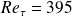
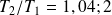

Etude d'un fort gradient de température sur un écoulement turbulent à travers son effet sur la viscosité dynamique totale
SFT 2010
Cette étude concerne la Simulation des Grandes échelles Thermiques (SGET). Elle vise à étudier l'influence d'un gradient de température sur un écoulement turbulent dans la configuration académique d'un canal plan bi-périodique avec températures imposées aux parois. Les SGET sont réalisées pour deux intensités de turbulence (  et ) et pour trois rapports de température (  et ). L'influence du gradient de température sur un écoulement turbulent crée une dissymétrie des profils de vitesse et de température qui est amplifiée par l'intensité turbulente. Une différence d'évolution des profils est notée pour les écoulements faiblement turbulents soumis à de très forts gradients de température. Nous montrons qu'un phénomène de relaminarisation du côté chaud du domaine est responsable de cette différence d'évolution. En effet, une étude analytique d'un écoulement laminaire soumis à un fort gradient de température montre un décalage de la vitesse maximale du côté froid du domaine, soit l'opposé de ce qui a été remarqué pour un écoulement turbulent. Par conséquent, les évolutions d'un écoulement turbulent soumis à de très forts gradients de température sont fortement influencées par le phénomène de relaminarisation, en particulier par l'influence de la température sur la viscosité dynamique totale.
Téléchargement : http://www.sft.asso.fr/Local/sft/dir/user-3775/documents/actes/Congres_2010/communications/26.pdf